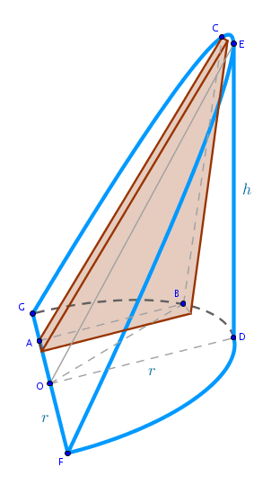
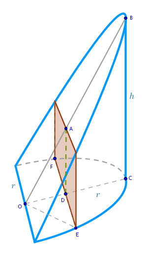

Problem
Find the volume of a hoof (in Archimedes' terms) or a right circular cylindrical wedge - a solid formed by truncating a right circular cylinder with a plane passing through the diameter of the cylinder's base at an arbitrary angle to that base.
The cylinder's radius \(r\) and hoof's height \(h\) are given, see the drawing.
Solution
Let us use Archimedes' primitive part - a thin triangular prism positioned as shown below.
Cut the hoof with a plane through \(O\) perpendicular to \(FG\), the diameter of the semi-circle that forms the base of the hoof, and consider its corresponding half:
Cut \(OG\) into \(n\) line segments of equal length:
$$\frac {r}{n}$$ The volume of the \(i-\)th primitive prism then is: $$V'_i = A(\triangle ABC) \times \frac {r}{n} =$$ $$\frac {AB \times BC}{2} \times \frac {r}{n} =$$Find \(BC\) as follows. By construction the triangles \(\triangle ODE\) and \(\triangle ABC\) have all the corresponding angles equal and, by AAA, are similar. From Euclid's "Elements" Book 6 Proposition 4 (the sides about equal angles in similar triangles are in the same proportion) it follows that:
$$\frac {BC}{AB} = \frac {DE}{OD}$$ $$BC = AB \times \frac {h}{r}$$and:
$$V'_i = AB^2 \times \frac {h}{2n}$$Find \(AB^2\) from the right, by construction, triangle \(\triangle OAB\) via the Pythagorean theorem:
$$OB^2 = OA^2 + AB^2$$ $$AB^2 = r^2 - OA^2 =$$ $$r^2 - \frac {r^2}{n^2}i^2$$where we have used the fact that:
$$OA = \frac {r}{n} \times i$$Then:
$$V'_i = \frac {h}{2n} \frac {r^2}{n^2} (n^2 - i^2) =$$ $$\frac {hr^2}{2n^3} (n^2 - i^2)$$An approximate volume of the entire hoof is the sum of volumes of its two halves:
$$V' = 2 \times \sum_{i=1}^n V'_i =$$ $$2 \times\sum_{i=1}^n \frac {hr^2}{2n^3} (n^2 - i^2) =$$ $$\frac {hr^2}{n^3}\Big(n^2 \sum_{i=1}^n - \sum_{i=1}^n i^2\Big) =$$ $$\frac {hr^2}{n^3}\Big(n^3 - \frac {n(n + 1)(2n + 1)}{6}\Big) =$$ $$\frac {hr^2}{n^3}\Big(n^3 - \frac {n^3}{6}\Big(1 + \frac {1}{n}\Big) \Big(2 + \frac {1}{n}\Big)\Big) =$$ $$hr^2\Big(1 - \frac {1}{6}\Big(1 + \frac {1}{n}\Big)\Big(2 + \frac {1}{n}\Big)\Big) =$$ $$hr^2\Big(\frac{2}{3} - \frac{1}{2n} - \frac {1}{6n^2}\Big)$$Applying the limit to \(V'\) as \(n \to +\infty\) we obtain:
$$V = \lim_{n \to +\infty} V' =$$ $$\lim_{n \to +\infty} hr^2\Big(\frac{2}{3} - \frac{1}{2n} - \frac {1}{6n^2}\Big) =$$ $$hr^2\Big(\lim_{n \to +\infty} \frac {2}{3} - \lim_{n \to +\infty}\frac{1}{2n} - \lim_{n \to +\infty}\frac {1}{6n^2}\Big) =$$ $$\begin{equation} \bbox[#e8e8e8,3pt]{\frac {2}{3} hr^2} \end{equation}$$Looking at the above formula we can make the following observation - even though the hoof is delineated by a semi-circle, a right circular cylinder and a conic, the irrational number \(\pi\) that usually accompanies these objects is, remarkably, absent from the formula for its volume.
In Steinmetz chapter we will come across a similar arrangement - the volume of an orthogonal intersection of two right cylinders also does not contain the irrational number \(\pi\).
Limit
Now that we know the volume of the hoof we can use that knowledge to obtain the magnitude of the following limit that can be used to compute the amount of pressure exerted by a liquid on the inner surface of vessels of various geometries and the amount of work required to be done to remove a given amount of liquid from these types of vessels:
$$\lim_{n \to +\infty} \frac {1}{n^3}\sum_{i=1}^n i \sqrt{n^2 - i^2}$$Instead of Archimedes' triangular we choose rectangular prisms as primitive parts to solve this particular problem and we position these parts as shown:
Divide \(OC\) into \(n\) line segments of equal length:
$$\frac {r}{n}$$The volume of the \(i-\)th primitive rectangular prism then is:
$$V'_i = FE \times AD \times \frac {r}{n}$$Prove that the right triangles \(\triangle OBC\) and \(\triangle OAD\) are similar and use that fact to find \(AD\):
$$\frac {AD}{OD} = \frac {h}{r}$$ $$AD = OD \times \frac {h}{r} =$$ $$\frac {r}{n} \times i \times \frac {h}{r} =$$ $$\frac {h}{n} \times i$$where we have used the fact that the point \(D\) is \(i\) widths of primitive prisms away from \(O\).
Then:
$$V'_i = FE \times \frac {hr}{n^2} \times i$$Find \(FE\) from the right, by construction, triangle \(\triangle ODE\) via the Pythagorean theorem:
$$r^2 = OD^2 + \frac {FE^2}{4}$$ $$FE = 2 \sqrt{r^2 - OD^2} =$$ $$2 \sqrt {r^2 - \frac {r^2}{n^2} i^2} =$$ $$\frac {2r}{n} \sqrt{n^2 - i^2}$$Then:
$$V'_i = \frac {hr}{n^2} \times i \times \frac {2r}{n} \sqrt{n^2 - i^2} =$$ $$\frac {2hr^2}{n^3} i \sqrt{n^2 - i^2}$$The approximate volume of the hoof then is:
$$V' = \sum_{i=1}^n V'_i =$$ $$\frac {2hr^2}{n^3} \sum_{i=1}^n i \sqrt{n^2 - i^2}$$Applying the corresponding limit to \(V'\) we obtain:
$$V = \lim_{n \to +\infty} V' =$$ $$\begin{equation} \frac {2hr^2}{n^3} \lim_{n \to +\infty} \sum_{i=1}^n i \sqrt{n^2 - i^2} \end{equation}$$But (1) and (2) express the volume of the same geometric object:
$$\frac {2hr^2}{3} = 2hr^2 \lim_{n \to +\infty} \frac {1}{n^3} \sum_{i=1}^n i \sqrt{n^2 - i^2}$$And hence:
$$\bbox[#e8e8e8,3pt]{\lim_{n \to +\infty} \frac {1}{n^3}\sum_{i=1}^n i \sqrt{n^2 - i^2} = \frac {1}{3}}$$\(\blacksquare\)